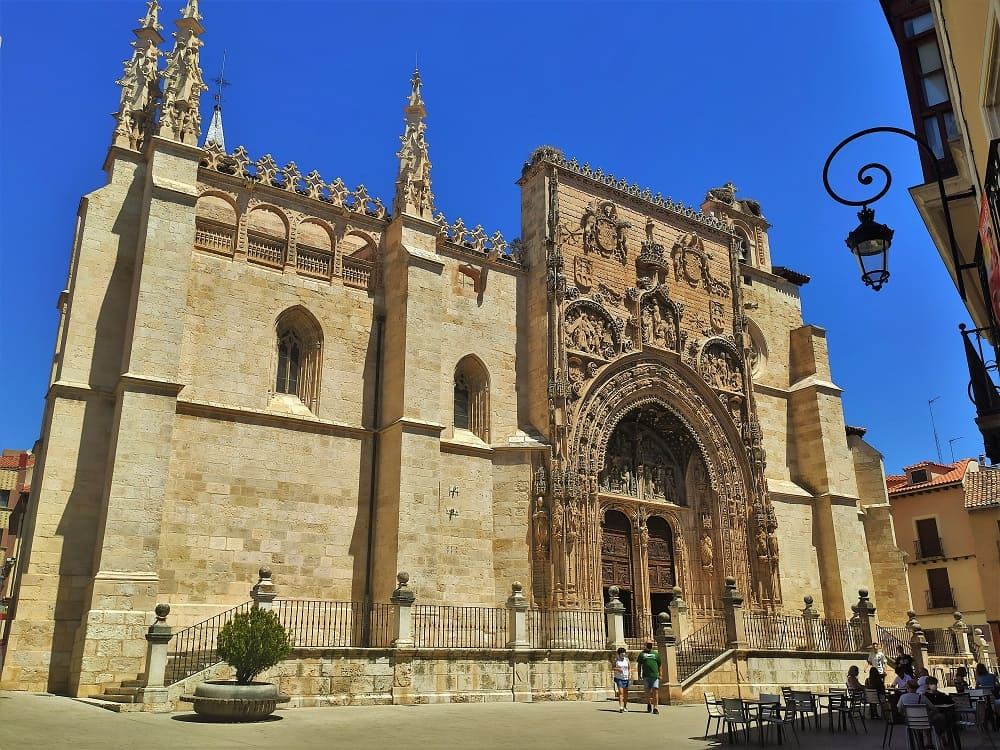

1. Viaje por el Norte de España
5 a 11 de agosto de 2021
Día 1, Guadalajara a Miranda de Ebro
5 de agosto de 2021


La salida del primer día fue desde Guadalajara a Miranda de Ebro.
Las primera ciudad a la que llegaría sería Buitrago de Lozoya en la Comunidad de Madrid, ciudad en la que no había estado hasta ahora, una de las pocas que me quedaba todo hay que decirlo.
La aparición en los libros de historia se hace en plena reconquista en el siglo XI. Era uno de los pasos para llegar a la mulsulmana Madrit. Debido a la posición de paso se haría una gran muralla en su perímetro así como un castillo de los cuales se conserva gran parte en la actualidad.
En el siglo XV y XVI ganaría popularidad debido a que el señorío de Buitrago era de los Mendoza que curisoamente eran de Guadalajara donde tenían casi todas sus posesiones.
El pueblo cuenta con una iglesia, Santa María del Castillo, del siglo XIV y de estilo gótico. Es una de las cuatro con las que contaba el pueblo en la edad media. La pena de la iglesia es que su interior fue quemado por los republicanos en la guera civil, incluyendose tallas, retablos y pinturas. Hoy en día la techumbre no es la original si bien ha quedado bien, la única original es la que cubre el altar Mayor.


En la ciudad además cuenta con un pequeño museo de obras de Picasso ya que el pintor tenía muy buena relación con su barbero que era de Buitrago y le donó muchos cuadros que hoy los ha dado al pueblo. Y sin duda alguna lo más destacado del pueblo su muralla junto al río.


Después subiría hacia la provincia de Burgos para llegar a
Aranda de Duero. Históricamente es conocida por haberse celebrado en 1473 el Concilio de Aranda, con presencia de la todavía princesa Isabel I de Castilla. También por el plano de Aranda, realizado en 1503, siendo el mapa urbano más antiguo del país y el documento cartográfico más antiguo del Archivo General de Simancas, en el cual se basaron para el desarrollo de las ciudades del Nuevo Mundo recién descubierto por la Corona de Castilla.
Cuenta un patrimonio que va entre lo religiosos con iglesias con mucha historia y con una gran cantidad de bodegas históricas. La antigua ciudad de Aranda de Duero estaba rodeada de murallas de las que se han conservado algunas partes.
El ayuntamiento por ejemplo, esta localizado en la parte central de la muralla que va desde el puente. Hoy en dia esa parte de la muralla sería derribada y sustituida por casas.
Una vez dentro si vamos a la oficina de turismo podemos acceder a un
museo municipal de la historia de Aranda de Duero con una gran maqueta central de la villa.
La iglesia más importante es
la iglesia de Santa María, que tiene una de las fachadas más impresionantes del gótico español. Es en realidad gótico tardío, a caballo con el renacimiento. La puerta que está en la parte de la nave de la epístola tiene un arco conopial decorado con bolas y puntas de diamante típicas de Gótico isabelino. Para que el sitio esté iluminado hay vidrieras de ventanales y rosetones. Algunas vidrieras y rosetones tienen imágenes humanas y son probablemente del siglo XVII. Por los numerosos detalles recuerda al palacio del Infantado en mi ciudad, Guadalajara, que también es de estilo flamígero por lo recargado que esta.
El retablo actual es del siglo XVII ya que el primer retablo que tuvo se quemaría en un incendio.
En la iglesia lo que realmente destaca es la escalera de subida al coro, que es del siglo XVI, de estilo gótico flamígero como la fachada de la iglesia.



Pasando el puente medieval, se encuentra de las iglesias importantes es
la iglesia de san Juan, que se encuentra en frente
del palacio de las Bolas, uno de los edificios singulares de Aranda. Destaca la gran puerta gótica con numerosos arquivoltas y en ella se encuentra
el museo de arte sacro de la ciudad.


El plato fuerte de la ciudad es de tipo etnológio y hay que recorrer sus númerosas bodegas con vino denominación de origen. Dicen que esa zona tiene los mejores Ribera del Duero de España. Una de las más importantes la que esta en
el Santuario de la Virgen de las Viñas.


 Lerma
Lerma y su
palacio ducal, en el cual vivio Francisco de Sandoval y Rojas, válido del rey uno de Felipe III y uno de los hombres más importantes de la época. Entonces mandaría construir ese gran palacio y florecería el pueblo de Lerma y sería nombrado duque de Lerma. Desde la Edad Media, la localidad es paso obligado en la Cañada Real Burgalesa, que une Extremadura y la sierra de la Demanda. Lerma es un conjunto arquitectónico notable del estilo herreriano. Cuenta con una
gran plaza mayor en la que se encuentra una cantidad de restaurantes con cierto toque medieval. El casco tiene alguna otra iglesia importante como
la iglesia de san Juan. También tres conventos de clausura en la que habitan más de un centenar de religiosas.


Lo más importante pues, es su palacio ducal. El palacio fue al Valladolid cortesano (1601-1606) lo que El Escorial a Madrid. Durante la Guerra civil española y los primeros meses de la posguerra (hasta noviembre de 1939) el Gobierno utilizó el edificio como prisión. Recientemente, tras una completa restauración y reforma, está habilitado como parador nacional de turismo.
Después de ver esta ciudad pondría rumbo a Burgos, cuna y origen de Castilla y del idioma que hoy hablamos. El palacio tiene cuatro torres en los ángulos con los chapiteles también recuperados después de las obras de rehabilitación.
Ningún palacio podía tener más de dos torres, salvo el de los reyes, pero al duque de Lerma se le concedió este privilegio, tal era su gran poder en la Corte. En realidad se trató de un semi engaño al rey Felipe III ya que el duque, durante la construcción, solicitó por carta permiso al monarca para poner dos torres en su palacio, a lo que éste accedió. Cuando más adelante el rey visitó Lerma se enojó al ver que el edificio tenía cuatro torres y pidió explicaciones al duque que le contestó mostrándole la misiva: "dos me corresponden por ser duque y otras dos que Vos me concedísteis.


 Burgos
Burgos sería de papel destacado y si bien la ciudad da para una visita de 1 día solo al haberla visitado con anterioridad bien se pueden pasar 4 horas visitando sus calles y alguno de sus monumentos como su catedral y el monasterio de las Huelgas, ambos patrimonio de la Humanidad.
El monumento estrella de Burgos es su
catedral gótica, la cual comenzó en 1221, siguiendo patrones góticos franceses. Tuvo importantísimas modificaciones en los siglos XV y XVI: las agujas de la fachada principal, la capilla del Condestable y el cimborrio del crucero, elementos del gótico flamígero que dotan al templo de su perfil inconfundible.
Numerosos son los tesoros arquitectónicos, escultóricos y pictóricos de su interior. Entre ellos destacan:
- El cimborrio gótico-plateresco, alzado primero por Juan de Colonia en el siglo xv y reconstruido por Juan de Vallejo en el xvi, siguiendo planos de Juan de Langres.
- La Capilla del Condestable, de estilo gótico isabelino, en la que trabajaron la familia Colonia, Diego de Siloé y Felipe Vigarny.
- El retablo gótico hispano-flamenco de Gil de Siloé para la Capilla de Santa Ana.
- El gran cuadro sobre tabla La Sagrada Familia de Sebastiano del Piombo.
- La sillería del coro.
- Los relieves tardogóticos de la girola, de Vigarny.
- Los numerosos sepulcros góticos y renacentistas.
- La renacentista Escalera Dorada, de Diego de Siloé.
- El Santísimo Cristo de Burgos, imagen de gran tradición devocional.
- La tumba del Cid Campeador y su esposa Doña Jimena, su carta de arras y su cofre.
- El Papamoscas, estatua articulada que abre la boca al dar las campanadas de las horas.

Otros monumentos que visitar son el arco de Santa María que se puede ver en la imagen, el puente de San Pablo, las murallas y su castillo.
Otro edificio importante de la arquitectura burgalesa es la Casa del Cordón que fue en su día el palacio de los Condestables de Castilla. En el edificio hay numerosas representaciones de los escudos heráldicos del matrimonio propietario del palacio (Velasco y Mendoza), y en concreto los dos escudos que hay sobre la puerta principal están unidos por medio de un cordón franciscano, también esculpido en la piedra. Un cordón o unas cadenas colgadas en la puerta de una casa indican que en ella ha dormido un rey, doña Mencía era devota de San Francisco y mandó esculpir el cordón franciscano. Este cordón es el que, en el acervo popular, dio nombre al edificio. Actualmente alberga un centro cultural y las oficinas centrales y sede social de una entidad bancaria.
En este edificio han ocurrido numerosos acontecimientos históricos como el recibimiento de Cristobal Colón por parte de los Reyes Católicos. La ceremonia de anexión de Navarra al reino de Castilla. Se han celebrado algunas bodas reales y ha sido residencia de numerosos reyes de España si bien desde el traslado de la corte de Burgos a Toledo y con posterioridad a Valladolid y a Madrid, el palacio iría perdiendo notoriedad y iría cayendo en desuso llegando en algunos casos a deteriorarse.
Por último iría en las afueras a ver el monasterio de las Huelgas que es de los más importantes historicamente hablando de España. Comenzo siendo un monasterio ciesterniense de monjas pero más adelante tendría gran relevancia debido a que se mandaría construir un panteón Real donde se encuentran los personajes más influyentes del siglo XIII y XIV, tales como Enrique I de Castilla, Fernando de la Cerda o Leonor de Castilla entre los más importantes y los reyes que mandaron construirlo en la nave central.
Además de este panteón, tiene un claustro románico muy bien conservado que junto al de Santo Domingo de Silos en Burgos son los mejores. Las paredes tienen muchos detalles de yesería mudejar, con caligrafía árabe en varias zonas. Los techos son de estilo mudejar que se añadirían ya en el siglo XV, cuando Toledo ya era castellano y se había extendido este estilo por toda la península cristiana. Además por ser una monasterio fortaleza también cuenta con una torre. Además al igual que otros monasterios de gran importancia de la época como el de Guadalupe en Extremadura las monjas se dedicaban a crear piezas de gran calidad, como vestidos, o herramientas, o libros los cuales se pueden encontrar en el museo de Ricas Telas Medievales en su interior. Estas piezas datan muchas del siglo XIII y XIV.
Muralla medieval, s.XI.
1
Iglesia de santa María la Real, s.XV.
2
1
Catedral y Monasterio de las Huelgas.
4
Día 2, ruta Rioja Baja (CLICK para continuar)
6 de agosto de 2021

![[Valid RSS]](https://www.onepointsync.com/wp-content/uploads/2016/08/valid-rss-rogers.png "Validate my RSS feed")